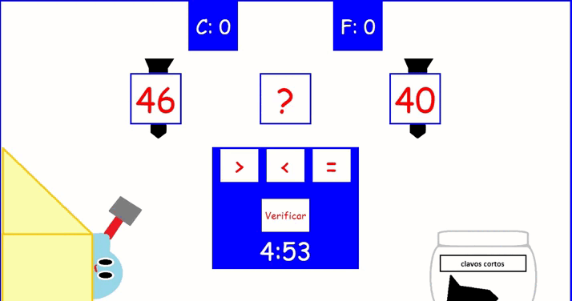
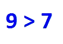
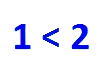

ahora que lo pienso, no esta bien pijado el cobertiso, es que todavia no coloco los clavos correctos pero algunos deben de estar en un lugar especifio o si no el clavo se soltara debido el tamaño segun su lugar
Pero hay un problema, he regado todos los clavos cuando organizamos las tabla asi que necesito saber cual los mayores clavos para el cobertiso
no es tan difilci solo tienes que agarrar dos clavos y me pasas el mayor de los dos y si son iguales me los pasas de igual manera
si necesitas informacion utilice mi libro
CONSEJOS
no te cuestiones demasiado, solo mirar antes de actuar

Los símbolos mayor que, menor que e igual que son >, <, y =, respectivamente. Estos símbolos se utilizan para comparar números y expresiones.
El símbolo de mayor que es >.
Por ejemplo, 9 > 7 se lee como
"9 es mayor que 7".

El símbolo de menor que es <.
Por ejemplo, 1 < 2 se lee como
"1 es menor que 2".

El símbolo de igual que es =.
Por ejemplo, 123 = 123 se lee como
"123 es igual que 123".